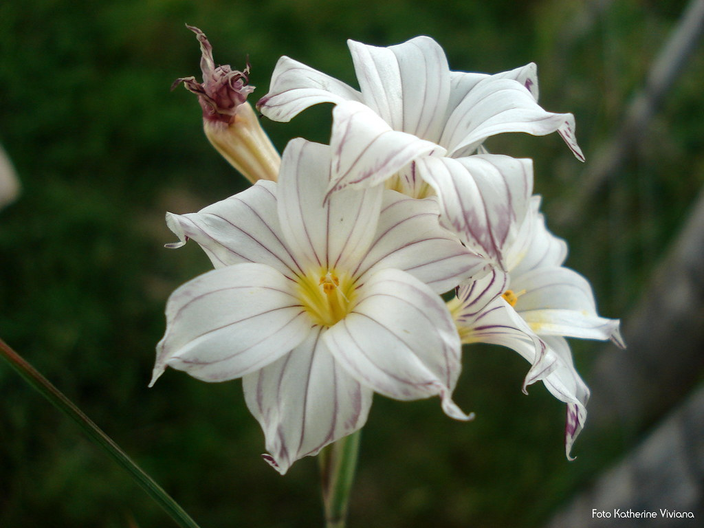

NOSOTROS
Nosotros somos un grupo de investigadores que se especializa en la historia de las plantas y flores
INVESTIGACION
Nos especializamos en las investigaciones tanto nacionales como regionales,pero estamos planeando extender nuestras investigaciones en el mundo entero
IMAGENES
Nuestras imagenes y videos son 100% originales, de sitios que visitamos e investigamos
LA FLOR NACIONAL
La flor de ceibo fue declarada flor nacional argentina por decreto del poder ejecutivo nacional el 22 de diciembre de 1942. (resultado de una encuesta realizada por un diario, en la cual participaron 20 mil personas). Por la vistosidad de sus flores actualmente se encuentran cultivadas en paseos, parques y plazas. Dato== también fue declarada “FLOR NACIONAL” en Uruguay. Su nombre Erythrima viene del griego “Erythros”== “Rojo”.
LAS FLORES DE CADA PROVINCIA DEL PAÍS
BUENOS AIRES
Pasionaria (PASSIFLORA CAERULEA): Esta hierba medicinal, es nativa de la provincia de buenos aires y se utiliza principalmente para tratar la ansiedad.

Flor de patito (Aristolochia triangularis): Está hierba tiene una naturaleza trepadora,es empleada para tratar mordeduras de serpientes,afecciones dermatológicas,etc.

CATAMARCA
la fauna está adaptada acondiciones de sequía y frío de altura
Quebracho blanco:
Horco quebracho:
CHACO
La flor del “Palo Borracho Rosado es la "Flor provincial del Chaco". Fue declarada nuestra flor provincial por la Ley Nº 5.521 de la Cámara de Diputados s ancionada el 14 de abril de 2005.
CHUBUT
La estepa, especialmente tussoks de coirón, jarilla, verbena y neneo, cubre toda el área de la gran meseta central.
En cambio, junto a la cordillera crece el denso bosque andino patagónico, formado por coníferas y fagáceas, entre las que se destacan los gigantescos Fitzroya cupressoides (alerces), los coihues, notros, radales, lengas, ñirés, maitenes y cipreses de la cordillera; existen especies frutales autóctonas como el calafate
CORDOBA
La legisladora Adriana Oviedo (Unión por Córdoba) presentó un proyecto de Ley para que la peperina sea declarada la flor oficial de la Provincia de Córdoba. El objetivo de la presentación es que se tomen medidas concientizar sobre la preservación de esta especie nativa.Este proyecto (Expte. 28220/19) propone, a su vez, que se incluya en los planes curriculares de todos los niveles educativos dependientes del Ministerio de Educación provincial el estudio de la peperina.La peperina es una planta aromática silvestre de la familia de las lamiáceas. El nombre común de menta peperina es sustentado organolépticamente por las características del aceite esencial de algunos de los quimiotipos que la especie presenta, en algunos casos de aroma marcadamente mentolado.
CORRIENTES
La fauna acuatica es lo que mas se encuentra en la provincia de corrientes y es descatacada y mencionada como parte de la identidad local.Se destacan en los "esteros del ibera" y las flores que se encuentran alli son principalmente:
camalote (Eichhornia spp):
amapola de agua (Hydrocleys nymphoides)
ENTRE RIOS
El palmar de colón: En colon se presenta una formacion de palmares de manera que forman un bosque extenso y abierto.
FORMOSA
El jazmín magno, flor provincial de Formosa, es una bella planta originaria de México y Centroamérica es muy popular en esta región, así como también en Paraguay y el norte de Argentina.
JUJUY
El 1° de septiembre es el día de nuestra flor provincial, la flor del lapacho rosado. Tenemos que recordar que hace más de 50 años, el lapacho fue declarado árbol regional y desde 1988, por ley, su flor fue declarada flor provincial.
LA PAMPA
La Margarita Pampeana fue instituida como flor provincial de La Pampa el 30 de noviembre de 1997, a través de una propuesta realizada por el ingeniero agrónomo Guillermo Covas, que fue quien descubrió e identificó dicha flor.
LA RIOJA
Institúyese como símbolo floral de la Provincia de La Rioja a la "Flor del Cardón"
MENDOZA
La Flor de la jarilla fue declarada como flor provincial a través de la Ley 7618. La normativa fue aprobada en 2006 y estableció el 10 de noviembre como el día para rendirle homenaje.
MISIONES

Institúyase el Lapacho Negro (Tabebuía-heptaphylla) como Flor Oficial de la Provincia de Misiones. ARTÍCULO 2. - Declárase Monumento Natural Provincial, de Interés Público y fuera de toda comercialización a la especie nativa Tabebuía-heptaphyla, Lapacho Negro.
NEUQUEN
El 24 de agosto de 2004 se declaró oficialmente a la Mutisia, como la Flor Provincial del Neuquén a través de la ley 2465.
RIO NEGRO
El notro es una especie endémica de Argentina y Chile. Presenta un extenso rango de distribución y habita diversidad de ambientes. Su flor es representativa de Río Negro..
SALTA
hieronymiella aurea:También llamada "flor del amor",Es una liliácea, una flor que tiene tépalos muy llamativos de mucho color. Es herbácea y se propaga mucho por rizomas. Y es una planta que alcanza los 40-50 centímetros de altura.
SAN JUAN
El retamo es la flor oficial de la provincia de San Juan, designada como tal por la Cámara de Diputados en noviembre del año 2005.
SAN LUIS
La flor del azahar de campo o clavel del aire blanco desde hace más de 40 años se menciona como el Símbolo Floral de la Provincia de San Luis, incluso en una guía de turismo editada por el gobierno provincial.
SANTA FE
La provincia no es lo que solia ser en el lado de la flora y fauna, ya que con el avance de la tala de arboles ,incendios y demas todo fue reemplazado por cultivos y montes de arboles exogenos, como por ejemplo: paraiso,alamo,eucalipto,etc. Al no haber gran cantidad de herbívoros, los pastos se desarrollaban luego morían, formando pajonales secos que enriquecían el suelo con materia orgánica, pero dejaban pobre en nitrógeno. Una de las especies que mas destaca en un lugar asi, son los
palmares de caranday: Una planta perteneciente a la familia de arecáceas, nativa de la ecorregión del gran chaco. es de rapida germinacion y abundante en forma silvestre,es la mas resistente al clima frio.
SANTIAGO DEL ESTERO
Santiago del Estero: El Gobernador, Dr. Carlos Arturo Juárez, por Decreto serie “E” Nº 1.427 del 3 de noviembre de 1999, estableció como Símbolo Floral Provincial de Santiago del Estero a la “flor de San Esteban”, “lagaña de perro” o “lágrima de la virgen”
TUCUMAN
Orquideas Cymbidium: primera orquídea vendida como planta de interior. Tiene su origen en las zonas tropicales y ecuatoriales del sudeste de Asia y Australia y su nombre viene del griego kumbos, que significa agujero, un concepto que se refiere, básicamente, a la forma de la base del labio. Sus flores, agrupadas en racimos, son las más largas de todas las orquídeas. Tienen una textura cerosa y pueden ser de color blanco, rosa, amarillo o malva.

TIERRA DEL FUEGO
Aunque sin un acto formal que lo declare, se la considera como la flor representativa de la Provincia a la Campanilla Biflora (Phaiophleps). El Escudo Provincial que hoy nos representa fue aprobado por Ley Provincial N° 61 del año 1992
SANTA CRUZ
Lengua de fuego, flor de Santa Cruz por Ley A la “Lengua de fuego” (Anarthrophyllum desiderátum) se la conoce también como “Mata guanaco”. Comúnmente tiene sus flores de color rojo intenso. Forma un conjunto de apariencia semejante a la de una bola de fuego, que contrasta con las tonalidades de la estepa.